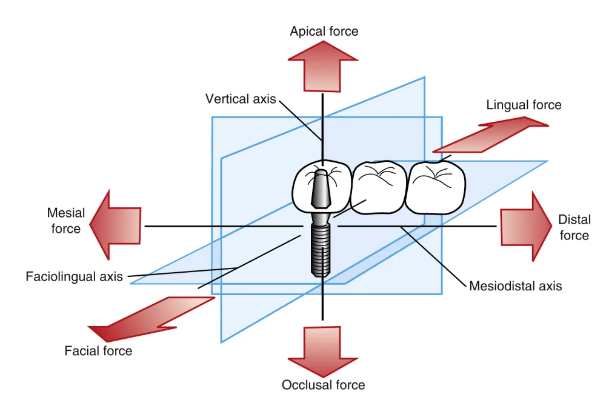
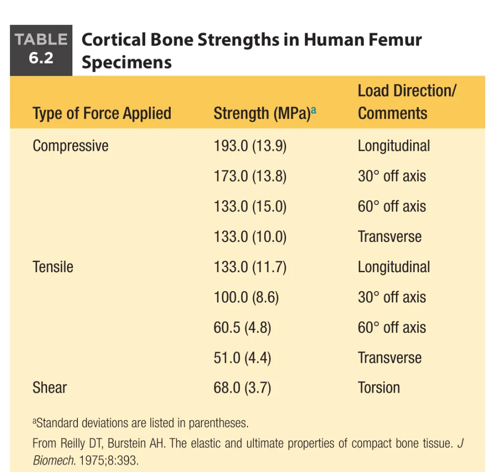

نسخه استخراجشده؛ ترجمه یا تأیید علمی انجام نشده است. وضعیت: captured
به تخصص تازهای وارد شدهای. در جراحی، پرسش این بود که ایمپلنت چگونه با استخوان ادغام میشود. در پروتز، پرسش این است که ایمپلنت چگونه بار را تحمل میکند — و پاسخ با یک تفکیک ساده شروع میشود.
نیروهای وارد بر ایمپلنت سه نوعاند: فشاری (compressive)، کششی (tensile)، و برشی (shear). و تفاوت سرنوشتشان را میشود در یک جمله گفت:
«نیروهای فشاری تمایل دارند یکپارچگی رابط استخوانـایمپلنت را حفظ کنند، در حالی که نیروهای کششی و برشی تمایل دارند چنین رابطی را از هم بکشند یا مختل کنند.»
این یک تفاوت درجهای نیست؛ یکی نگه میدارد و دو تای دیگر جدا میکنند.
و همین نتیجهی طراحی اکلوژن را میسازد: «نیروهای فشاری معمولاً باید در اکلوژن پروتز ایمپلنت غالب باشند.»
چرا استخوان اینطور رفتار میکند؟ پاسخ در خواص ماده است:
«استخوان کورتیکال در فشار قویترین و در برش ضعیفترین است.»
و استحکام استخوان کورتیکال ران انسان این را با عدد نشان میدهد (بر حسب مگاپاسکال):
• فشاری: ۱۹۳٫۰ طولی، ۱۷۳٫۰ در ۳۰ درجه خارج از محور، ۱۳۳٫۰ در ۶۰ درجه، ۱۳۳٫۰ عرضی
• کششی: ۱۳۳٫۰ طولی، ۱۰۰٫۰ در ۳۰ درجه، ۶۰٫۵ در ۶۰ درجه، ۵۱٫۰ عرضی
• برشی: ۶۸٫۰ در پیچش
دو الگو را در این اعداد ببین:
۱. در هر ردیف، هرچه بار از محور دورتر میشود استحکام کم میشود. فشاری از ۱۹۳ به ۱۳۳ میرسد و کششی از ۱۳۳ به ۵۱ — یعنی کشش با انحراف زاویه، سریعتر فرو میریزد.
۲. ضعیفترین عدد این مجموعه ۵۱ مگاپاسکال است (کششی عرضی) در برابر قویترین که ۱۹۳ است — تقریباً چهار برابر تفاوت، فقط از تغییر نوع و جهت نیرو.
و حکم قاطعتری هم هست: «نیروهای برشی در مقایسه با سایر حالتهای بارگذاری، مخربترین برای ایمپلنتها و استخواناند.»
و نکتهی مهم اینکه این فقط دربارهی استخوان نیست: «افزون بر این، سمانها و پیچهای نگهدارنده، اجزای ایمپلنت، و رابطهای استخوانـایمپلنت، همگی نیروهای فشاری بیشتری را نسبت به کششی یا برشی تحمل میکنند.»
پس کل سیستم — از استخوان تا پیچ تا سمان — یک ترجیح مشترک دارد.
و حالا عددی که این تفاوت را ملموس میکند:
به این عددها دقت کن: «در حالی که استحکام فشاری یک سمان زینکفسفات معمول ۸۳ تا ۱۰۳ مگاپاسکال (۱۲٬۰۰۰ تا ۱۵٬۰۰۰ پوند بر اینچ مربع) است، مقاومت آن در برابر کشش و برش بهطور معناداری کمتر است (۵۰۰ پوند بر اینچ مربع).»
۱۲٬۰۰۰ در برابر ۵۰۰. یعنی همان سمان در برابر برش، حدود بیستوچهار تا سی برابر ضعیفتر است.
این عدد را نگه دار، چون در هر بحث سمانی در برابر پیچشونده به آن برمیگردیم: سمان برای فشار ساخته شده، نه برای کشیده شدن.
و نتیجهی عملی نهایی این درس: «ایمپلنتها باید در جراحی طوری کاشته شوند که تا بیشترین حد ممکن، بارگذاری مکانیکی در امتداد محور طولی بدنهی ایمپلنت انجام شود.»
چون بار در امتداد محور، عمدتاً فشاری است — و بار خارج از محور، همان چیزی است که کشش و برش میسازد.

حالا ببین طراحی ایمپلنت چگونه نوع نیرو را عوض میکند.
ایمپلنت استوانهای (cylinder): یک هشدار روشن:
«ایمپلنتهای استوانهای بهویژه در بالاترین خطر برای بارهای برشی مضر در رابط ایمپلنتـبافت، تحت یک بار اکلوزالی هدایتشده در امتداد محور طولی بدنهی ایمپلنت هستند.»
این جمله خلاف شهود است و باید دو بار خوانده شود. بار در امتداد محور — همان چیزی که «ایدهآل» میدانیم — در ایمپلنت استوانهای برش میسازد، نه فشار. چون سطح صاف موازی با نیرو است و چیزی برای گرفتن بار عمود ندارد.
و به همین دلیل: «در نتیجه، ایمپلنتهای استوانهای به یک پوشش نیاز دارند تا استرس برشی در رابط را از راه اتصال استخوانی یکنواختتر در طول ایمپلنت مدیریت کنند.»
ایمپلنت رزوهدار یا فیندار: «ایمپلنتهای دندانی رزوهدار یا فیندار، ترکیبی از هر سه نوع نیرو را در رابط تحت اثر یک بار اکلوزالی واحد ایجاد میکنند.»
یعنی رزوه، بخشی از بار محوری را به فشار عمود بر سطح رزوه تبدیل میکند. و خبر خوب این است که «شیوع نیروهای بالقوه خطرناک کششی و برشی در ایمپلنتهای رزوهدار یا فیندار میتواند از راه طراحی مهندسی دقیق بهطور بهینه کنترل شود.»
پس هندسهی رزوه یک تصمیم مهندسی است، نه یک جزئیات ظاهری.
و حالا باور دومی که باید اصلاح شود — اباتمنت زاویهدار:
این قاعده را به خاطر بسپار: «اباتمنتهای زاویهدار برای بهبود زیبایی یا مسیر ورود رستوریشن به کار میروند، نه برای تعیین جهت بار.»
این یک تصحیح مهم است. بسیاری تصور میکنند اباتمنت زاویهدار، بار مایل را «صاف میکند». نمیکند.
و بدتر: «اباتمنتهای زاویهدار همچنین به ایجاد اجزای نیروی عرضی خطرناک تحت بارهای اکلوزالی در جهت اباتمنت زاویهدار میانجامند.»
یعنی اباتمنت زاویهدار مسئله را حل نمیکند؛ یک مسئلهی تازه میسازد. راهحل واقعیِ جهت بار، موقعیت جراحی ایمپلنت است — که پیش از پروتز تعیین میشود.
و اینجاست که پروتز و جراحی به هم میرسند: اگر جراح ایمپلنت را در محور نامناسب بکارد، پروتزیست ابزاری برای اصلاح جهت بار ندارد — فقط ابزاری برای اصلاح مسیر ورود دارد.
